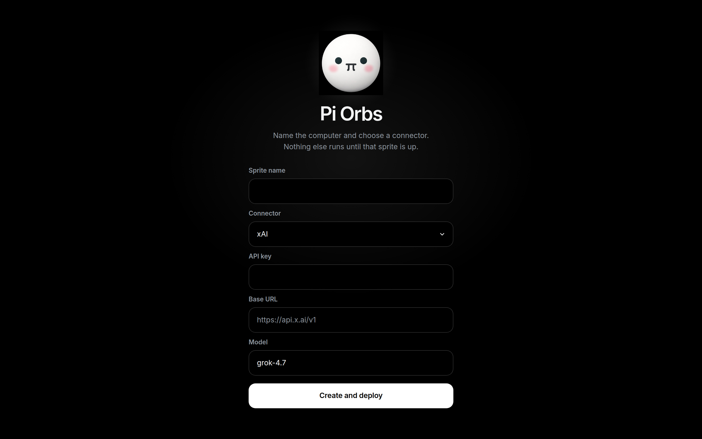
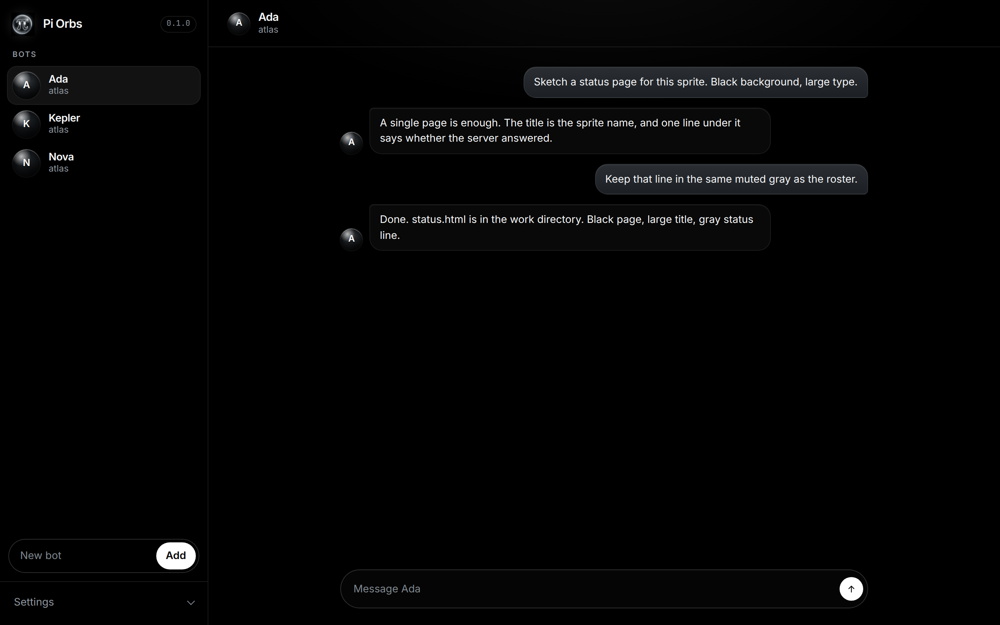
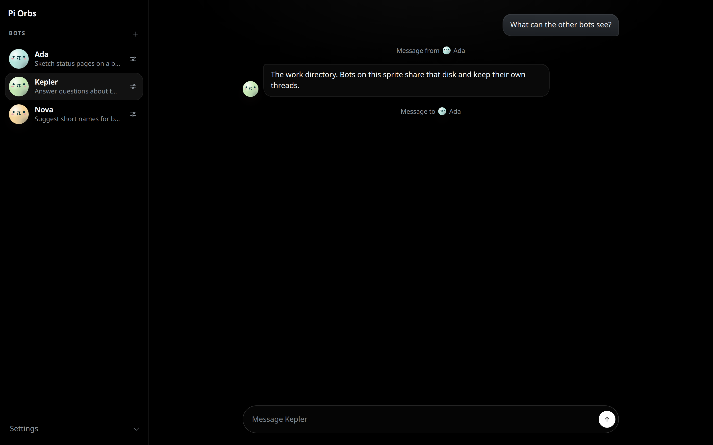
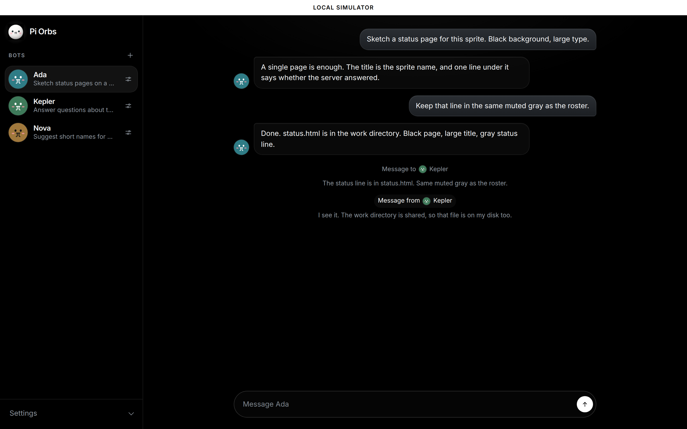

A Pi thread per bot
Each bot is its own Pi conversation. The first bot is selected on load. Add opens a dialog for its name, instruction, and glass orb.
Named Pi bots on one shared Fly.io Sprite — install the client, it deploys the server.
npx pi-orbs
npx pi-orbsNamed bots, each one a durable Pi thread, sharing one Fly.io Sprite as their computer.
Each bot is its own Pi conversation. The first bot is selected on load. Add opens a dialog for its name, instruction, and glass orb.
They share one Fly.io Sprite, including /home/sprite/work. The thread refreshes every few seconds.
What you install is the client. It keeps the Sprite list, creates bots, and pushes a server build onto a Sprite when you ask it to.
One command. The client deploys the server onto a Fly.io Sprite.
npx pi-orbsThe first screen asks for a Sprites API token. Pi Orbs uses that token with api.sprites.dev to create the Sprite.
Named bots then share that Sprite as their computer. Each bot keeps its own thread. They share the Sprite’s disk, including /home/sprite/work.
Until a sprite is running, the page asks for a sprite name, a connector, and an API key, then Create and deploy. The connectors are xAI, OpenAI, Anthropic, and Custom. xAI is the default. The key stays in a Sprites connection, not in the sprite service environment.

A roster of named bots and the thread you have open. A steer from another bot is a line in that thread. Settings can download every conversation as a zip.


